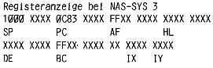
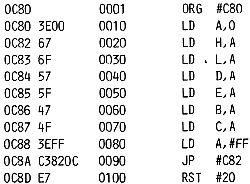

Nascom Journal |
Februar 1982 · Ausgabe 2 |
Hier also der versprochene Beitrag über die Ladebefehle. (Wir wollten ja streng nach dem Z80 Manual vorgehen, aber Günter Kreidl hat mit der BCD-Serie etwas vorgegriffen). Zunächst ein Tip zur Arbeit im Assembler. Obwohl ich den ZEAP 2.0 besitze (und vorher mit ASM Assembler gearbeitet habe), skizziere ich Programme immer zunächst auf dem Papier. Man überblickt dann größere Progammteile schneller und hat nicht nur 15 Bildschirmzeilen vor sich. Das Umschreiben der mnemonischen Assemblerbefehle in den Object-Code lasse ich allerdings den Rechner machen (obwohl mir das Assemblieren per Hand nichts geschadet hat, Im Gegenteil: nach häufigem Aufsuchen des Object-Codes in den Tabellen gewinnt man einen Blick für das Lesen von Hexdumps, so daß man z.B. schnell zwischen Befehlen, ASCII-Strings und Tabellen unterscheiden kann). Nun aber zur Praxis!
Ein Programm besteht eigentlich nur aus Daten, die zwischen verschiedenen Registern des Prozessors ausgetauscht, manipuliert, in verschiedenen Speichern abgelegt oder durch Ports ausgegeben werden. So ist das Laden von Registern und Speichern einer der wichtigsten Aufgaben eines Programms.
Betrachten wir uns die Matrix der 8 Bit-Ladebefehle. (In meinem MOSTEK Manual auf Seite 29). Ich habe sie allerdings wie alle anderen Tabellen fotokopiert und in Klarsichthüllen aufbewahrt, so daß ich immer die möglichen Befehle vor mir habe). In der linken Spalte stehen die Zielregister (Destination), die geladen werden sollen; in den Zeilen stehen die Quellregister (Source), aus denen geladen wird. Nun muß man nur noch wissen, daß ein Register ohne Klammer direkt geladen wird, ein Register mit Klammer aber auf die Adresse hinweist, die geladen werden soll. (Keine Angst, dies wird am Beispiel verdeutlicht).
Soll Register A mit dem Wert von Register B geladen werden (im Assembler heißt das LD A, B), so suche ich in der Tabelle A als Ziel und B als Quelle. An der Schnittstelle findet man den Code für den Rechner 78. Ich kann aber auch A direkt mit einer Zahl n laden, (n steht ganz oben rechts). Dann heißt der Befehl im Maschinencode 3E n.
Probieren wir das einmal praktisch aus. Mit dem MODIFY Befehl M C80 ENTER nehmen wir uns die Adresse 0C80 vor. Der Rechner zeigt nun auf dem Bildschirm, welchen Inhalt diese Adresse hat. Wir geben ihr nun den Inhalt 06, in dem wir diese Hexzahl und anschließend ENTER eintippen, Nun wird auf dem Schirm die nächste Adresse angezeigt. Die belegen wir mit z.B. FF + ENTER. Damit haben wir den Beginn unseres Programmes bereits festgelegt. 06 FF bedeutet LD B,FF hex (Ziel B wird mit Zahl n = FF geladen). Unser nächster Befehl ist 78 (Sie erinnern sich: LD A,B). Damit wir unser Programm auch testen können, geben wir zuletzt E7 ein, Dieser Befehl bewirkt einen Sprung in das Betriebssystem und zeigt alle Register an. Wir schließen das Laden des Programmes mit Punkt und ENTER ab. Wenn das Programm nun mit E C80 (execute = ausführen) gestartet wird, zeigt es augenblicklich die Register auf dem Bildschirm an.
Register A und B enthalten beide FF; denn unser Programm lautete
LD B,FF LD A,B RST 20H (Restart 20Hex = E7 = Breakpoint)
Sie können obiges Programm auch mit den anderen Registern durchspielen. Die Registeranzeige gibt Ihnen jeweils das Ergebnis an, Mit dem S Befehl (Single Step = Einzelschritt) können Sie auch jede Programmzeile einzeln verfolgen. Achten Sie bei folgendem Programm darauf, wie sich die einzelnen Register verändern, und suchen Sie die Befehle in der Tabelle auf.
| Seite 23 von 32 |
|---|